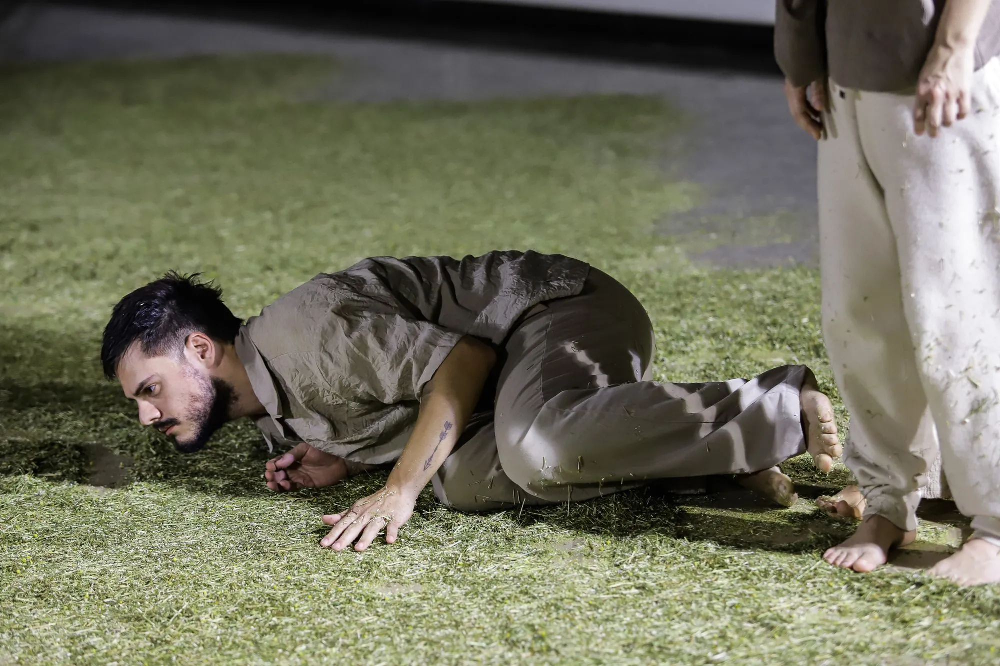
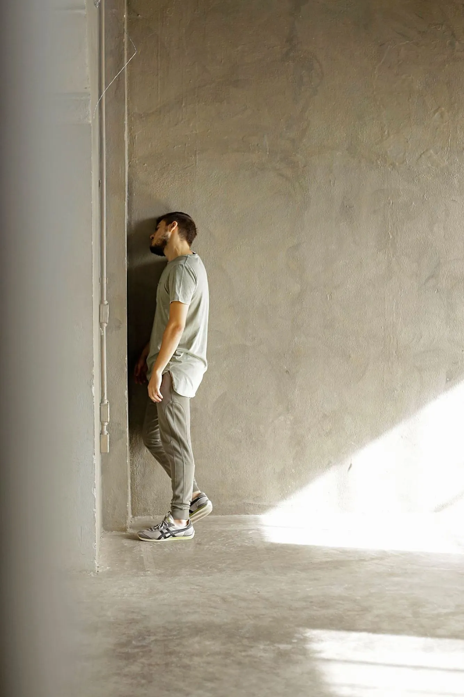
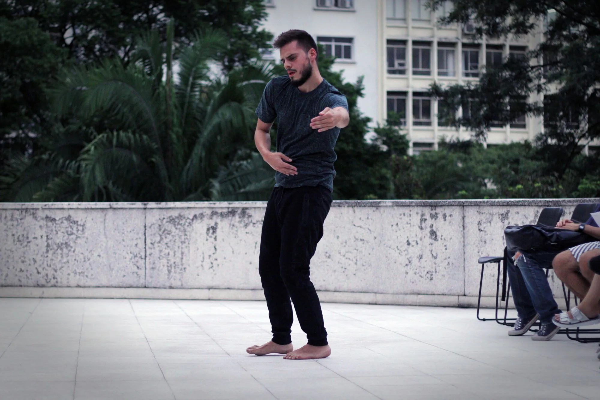

2024
Onde Houver Céu
Nominado al Premio APCA


2013 — 2024
2024
Nominado al Premio APCA

2023
2021
2021
El título retoma uno de los capítulos de A Flor da Lua.

Instante-já · 2019
Foto Silvia Machado

2019 / 2022
Nominado al Premio APCA-Danza 2019: Estreno del año y Premio Técnico (luz y espacio escénico de Hernandes de Oliveira)
Todo lo que sucede en el cerebro comienza en células conocidas como neuronas. Entre una neurona y otra hay, en muchos casos, pequeños huecos, llenos de sustancias químicas liberadas con cada disparo de un impulso eléctrico. Son ellos los que influyen en la producción de imágenes que vienen de los sentidos humanos y del flujo de nuestros pensamientos.
Estos fueron algunos de los disparadores para la creación de instante-já, nombre inspirado en la obra Água Viva de la escritora Clarice Lispector, en las poéticas que reflexionan sobre el paso del tiempo y que, en este contexto, se contaminan con ideas sobre percepción, memoria y producción de imágenes, presentes en el universo de las ciencias cognitivas. El deseo de bailar el instante-ya se profundizó con el encuentro de Marcus Moreno con la artista uruguaya Andrea Arobba, a través de la inmersión en materiales creativos reunidos durante una residencia artística en el Centro de Referencia de la Danza (CRDSP). Es un trabajo que nace del encuentro: con el tiempo, con el espacio, con diferentes cuerpos, con distintas maneras de hacer danza. Un solo construido por muchas presencias, en muchos instantes.
Obra creada en 2019 con el apoyo del Programa Municipal de Fomento a la Danza de la Ciudad de São Paulo, Secretaría Municipal de Cultura.
El aire es el no lugar donde todo va a existir Clarice Lispector


2017
Este trabajo surge de temas corporales concretos para la creación de imágenes sensoriales.
A partir de combinaciones del cuerpo y de sus singularidades, danza, música y luz se reúnen para inventar encuentros posibles.
Obra creada con el apoyo de la convocatoria ProAC nº 04/2016, de apoyo a la producción de espectáculos inéditos y temporadas de danza en el Estado de São Paulo.
2016
Esta pieza fue creada en capítulos breves. Así como la flor de la luna nace y dura una sola noche, la danza se expande camino al cierre.
El punto de partida de este trabajo es el paso del tiempo. A través de la metáfora de la flor de la luna, e inspirada en la obra de la artista e ilustradora botánica Margaret Mee, la danza se va constituyendo a partir del instante presente.
Creado dentro del Programa de Residencia Artística de la Casa das Caldeiras (SP), el solo A Flor da Lua se estrenó en 2016 en el Sesc Campinas y circuló por festivales y muestras como Tiradentes em Cena (MG), Dança nas Bordas (SP) y el Ciclo Solos al Mediodía (Montevideo, UY). En 2019, con el apoyo del Programa de Fomento a la Danza, tuvo amplia difusión en distintos espacios de la ciudad de São Paulo.



2013
El punto de partida de esta creación es el de la tela en blanco, el espacio del acontecimiento que está a punto de llenarse.
Estreno entre los destacados del año en la retrospectiva de la crítica Helena Katz, O Estado de S. Paulo
Como un pintor que comienza su obra con una primera marca de pintura sobre el cuadro, la danza aquí nace del impulso interno vital, del movimiento del cuerpo.
El deseo de reflexionar sobre los espacios vacíos en la construcción de imágenes comenzó con la discusión sobre la cualidad de las sensaciones propuesta por Alberto Manguel en su libro Lendo Imagens, y se intensificó con el contacto con la obra del pintor Jackson Pollock, conocido por subvertir el soporte y dejar caer la pintura sobre la tela extendida en el suelo.
Estimulada por la acción de ‘pintar pintando’, recorrida por la forma, el color, la abstracción y su capacidad de volverse movimiento, la composición se fue constituyendo con la urgencia y la inmediatez de bailar. ‘Escurrir’, ‘salpicar’, ‘(des)manchar’, ‘(des)controlar’ son algunos verbos de acción que sirvieron de punto de partida para una serie de pequeñas improvisaciones. A Imagem como Ausência propone reflexionar sobre la presencia de lo que no necesariamente se ve o se dice, en un espacio en el que el cuerpo se constituye por su propia acción y busca su modo de hacer danza.
Obra creada en 2013 con el apoyo de la convocatoria ProAC de Primeras Obras de Creación en Temporada de Danza.